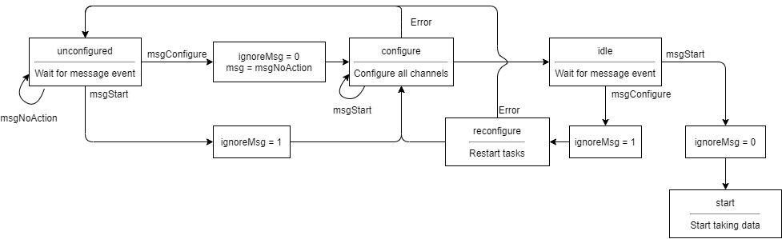

DAQ (NI cDAQ)
Individual devices
General
If a DAQ unit is power cycled, it may need to be reconnected from the National Instruments “MAX” (measurement and automation explorer) software. To do this, open MAX, expand “network devices”, right click the relevant device, and use the “self-test” option, then try reconnecting from IBEX.
Connecting to a cDAQ using DAQmx and NI-MAX
You will need:
Latest version of NI-MAX
DAQmx driver installed (see “Device support in NI-DAQmx” section of DAQmx readme for compatibility with cDAQ devices)
To connect to the device from the instrument/your machine see the National Instruments documentation
You can also connect to a simulated device, see the instructions at http://www.ni.com/tutorial/3698/en/.
Notes:
Opening “Devices and Interfaces” in the sidebar typically takes several minutes on a computer connected to the RAL network. This is possibly because of the amount of NI hardware on the network.
You will need to know the hostname of the cDAQ for the “Find Network NI-DAQmx Devices” dialogue
Configuring a DAQ IOC
The Asyn port for each channel for the daq is defined using the DAQmxConfig iocsh command. This is typically located in a st-daq.cmd file next to the device’s st.cmd. The DAQmxBase documentation is here: https://isiscomputinggroup.github.io/EPICS-DAQmxBase/
DAQmxConfig ( Asyn_port_name, physical_channel_address, channel_number, data_type, options)
Asyn_port_nameis name of the Asyn port to be created for this channel.physical_channel_addressis the address of the channel on the device you wish to connect to. To obtain this find which input/output you wish to address on the DAQ card. This can be found on the pinout of the specific NI card by clicking theDevice Pinoutbutton in NI-MAX. For example,cDAQ9181-1234MOD3/ai0addresses the third card in chassiscDAQ9181-1234, and the second AI channel from that card.channel_numbershould start from zero, this is used to address each channel within an Asyn port.data_typeis the data type of the channel (AI, AO, BI, …)optionsSome common options are described here. All options can be found in the documentation for DAQmxBase:Read mode can be continuous (default), OneShot (get data when record processed), or MONSTER (see below)
Fis the frequency (speed) at which samples will be collectedNis the number of samples DAQmxBase will collect and then return to the IOC.
A sample call to DAQmxConfig looks like (taken from separator):
DAQmxConfig("R0", "cDAQ9181-1234MOD3/ai1", 1, "AI","N=1000 F=1000")
This configures the third card of chassis cDAQ9181-1234, ai input 2. Data acquisition is continuous at a rate of 1000 samples/second collection. The sample size is 1000, so will return around once per second.
To address this channel in a record, your input field will look like:
field(INP, "@asyn(R0 1 5.0) DATA")
This accesses channel 1 of port R0, with a 5.0 second timeout.
Design of the DAQmx Driver
The DAQmx driver was originally written by Diamond but is no longer in use by them, meaning it is effectively ours to maintain. It’s written using the old C API for asyn rather than the newer C++ one. At it’s core the driver uses a state machine for configuring and acquiring data and a messaging system for moving between states. The state machine for the configuration is roughly described by the diagram below:

There are a number of other states after the start state that actually do the data acquisition but these are simpler. The state machine is incredibly hard to reason about as there are two mechanisms to move between states:
At the beginning of the main loop a message is picked off the queue (if
ignoreMsg=0). This message is then used to change the state.During the execution of a state the state for the next loop can be changed. This change is regularly overwritten later on in the state’s execution or when the message handling is performed on the next loop.
This means the diagram above is only a rough idea of what is going on. The driver is in dire need of a rewrite, see https://github.com/ISISComputingGroup/IBEX/issues/5386.
Data bottlenecking in the DAQmxBase driver (Monster mode)
When developing the zero field magnetometer IOC we found that there are significant overheads in the EPICS DAQmx driver when running it in one shot and continuous modes. In these modes the NI task used to take the data is started and stopped with every point/array of data requested (as applicable). This means that each point/array takes ~150 ms to acquire, around 100ms of this is from starting the task and ~50ms to actually take the data.
We addressed this issue for the zero field magnetometer (which needed consecutive readings very close to each other) by running in ‘monster’ mode. In monster mode the NI data acquisition task is never closed, so the data can be captured at a much faster rate. However, if the requested data rate is too high this can cause a buffer overflow. For the zero field magnetometer on a developer’s machine this occurred at ~100000 data points/second.
To change the read mode of the DAQ to monster mode, add MONSTER to the options in its DAQmxConfig call, for example:
DAQmxConfig("R0", "cDAQ9181-1234MOD3/ai1", 1, "AI","MONSTER N=1000 F=1000")
Unlike the other two modes, monster mode needs a call to DAQmxStart(portname) at the end of the st.cmd file for the IOC, see the ZFMAGFLD st.cmd for a reference.
Common errors
The DAQmxBase driver used in IBEX can throw a number of errors to the log file. After resolving the issue, the IOC will need rebooting.
### DAQmx ERROR (CreateAI): Device cannot be accessed. Possible causes:
Device is no longer present in the system.
Device is not powered.
Device is powered, but was temporarily without power.
Device and/or chassis driver support may have been removed.
If this happens immediately on IOC boot, check if the DAQ is connected in NI-MAX. Check the device is reserved in NI-MAX and can be reached over the network. If you believe the device is reachable but has a red cross beside it in NI-MAX, then right-click the device under network devices, unreserve and re-reserve.
NI-MAX is a piece of software which is installed on the NDX that needs it, available from the start menu on the instrument. It can be very slow when expanding the list of device - be patient.
### DAQmx ERROR (ReadAnalogF64): The specified operation cannot be performed because a task is in the process of being aborted or a device is in the process of being removed from the system. Wait until the abort operation is complete and attempt to perform the operation again.
This error usually occurs when the connection between the IOC and DAQ has been interrupted after the IOC has started running normally. Check that the machine running the IOC still has the device reservation and can connect to the DAQ. Restart the IOC.